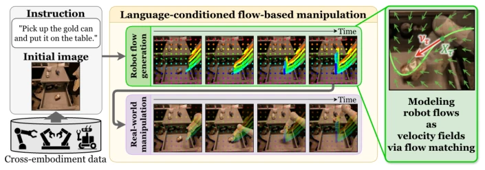
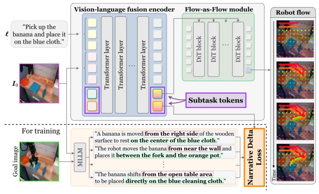
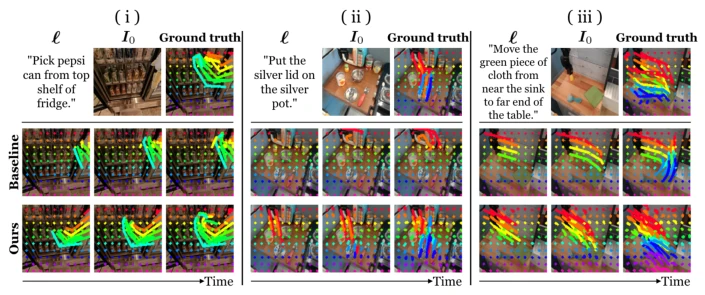
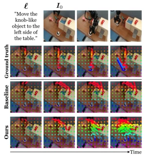

This paper adds another layer of "flow" to robot VLA models. The authors consider existing sparse keypoint-based methods too coarse, like piecing together a map with mosaics, so they developed NarrativeFlow, using flow-matching to transform the robot motion field into a continuous velocity field. This idea is quite elegant; physical consistency is indeed better, capable of generating trajectories that conform more closely to real physical laws. However, the most striking operation is introducing a "Narrative Delta Loss", enabling the model to learn the "story" of scene changes rather than rote memorization of pixels. Although the experimental data looks good, ADE dropped by nearly half, but in failure cases, ambiguous instructions like "knob-like object" directly caused the model to open drawers, indicating that language understanding remains a significant weakness. Overall, it is a solid upgrade in the field of flow control, but do not expect it to understand all human jargon; the future still lies in 3D flow.
Training robot foundation models relies on large amounts of embodiment-specific data, which is costly to collect and difficult to scale. Existing flow methods (such as Im2Flow2Act [49]) approximate motion using sparse keypoints, ignoring the continuity of physical processes, and Im2Flow2Act has a 21% lower success rate than oracle flow. Although Flow as Flow [38] can model velocity fields, it only supports goal-conditioned settings and cannot handle language instructions. Furthermore, existing methods lack explicit supervision for task-related scene changes and are easily misled by background noise. This study aims to solve the flow generation problem under language conditions, achieving embodiment-agnostic generalization using multi-platform data, while enhancing semantic understanding through auxiliary losses to reduce dependence on specific robot data.
The overall process is: given an initial image and language instruction, the model generates a robot velocity field, and the robot then executes. The core architecture includes a Vision-Language Fusion Encoder and a Flow-as-Flow Module. The Encoder outputs two subtask tokens: one for Flow-as-Flow to generate flow, and the other for calculating Narrative Delta Loss. Flow-as-Flow is based on the DiT architecture, modeling the velocity field as a probability field, and predicting future point coordinates through flow-matching. Narrative Delta Loss is an auxiliary objective, utilizing an MLLM to generate text descriptions of scene changes, aligning intermediate representations with task-related scene changes to reduce background interference. The design of Subtask Tokens avoids signal interference between the two objectives. During training, the main loss and auxiliary loss are jointly optimized; during inference, only the main loss is used. Specifically, the velocity field includes a stable term, and the DiT module uses adaLN-Zero modulation to ensure the generated flow is physically reasonable.

Fig. 1: Overview of our approach to language-conditioned flow-based manipulation. We formulate robot flows as continuous velocity fields via flow matching. For training, we use data collected from multiple robot platforms. At test time, given an instruction and an initial image, our model generates a robot flow. The robot then executes the object manipulation task based on the robot flow.

Fig. 2: Architecture of NarrativeFlow. The vision-language fusion encoder integrates the embeddings of ℓand I0 into the two subtask tokens: one for conditioning the Flow as Flow module to generate the robot flow, and the other for computing the Narrative Delta loss. During training, the Narrative Delta loss is used as an auxiliary training objective, aligning the corresponding subtask token with the narrative representations of task-relevant scene changes from I0 to the goal image.
Tested on Fractal and Bridge V2 datasets, comparing with FLIP [13] and Im2Flow2Act [49]. Metrics include ADE, FDE, and LTDR. NarrativeFlow's ADE is superior to the baseline on both datasets (Fractal 21.68 vs 37.14). Real-world experiments used the HSR robot, completing drawer closing, grasping, and stacking cups tasks, with an average success rate of 55%, which is 13 percentage points better than the baseline. Ablation experiments show that both subtask tokens and Narrative Delta Loss are effective. Failure cases indicate that ambiguous instructions (such as "knob-like object") can still lead to misidentification. Experiments also verified the model's generalization ability on cross-embodiment data, proving the effectiveness of flow representation.

Fig. 3: Qualitative comparison between NarrativeFlow and a baseline method (Im2Flow2Act [49]). In each panel, the first row presents ℓ, I0, and the ground-truth robot flow. The second and third rows show the predicted robot flows of the baseline method and the proposed method, respectively.

Fig. 4: A failure case of NarrativeFlow on Bridge V2 [44]. The first row shows ℓ, I0, and subsequent frames sampled from the ground-truth video in temporal order. The other rows show the robot flows of the ground truth, a baseline (Im2Flow2Act [49]), and the proposed method in temporal order, respectively.